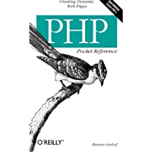

Rasmus Lerdorf
Página principal
Trabajos y proyectos
Bibliografía
Opiniones
Bibligorafía

Breve historia PHP
Fue originalmente diseñado en Perl, con base en la escritura de un grupo de CGI binarios escritos en el lenguaje
C. El 8 de junio de 1995 fue publicado "Personal Home Page Tools" después de que Lerdorf lo combinara con su
propio Form Interpreter para crear PHP/FI.
Todos los libros de Rasmus son sobre PHP
Libros y capítulos
Programming PHP
Introduction
Languaje Basics
Functions
Strings
Arrays
Objects
Databases
Graphics
PDF
XML
Security
Application Techniques
PHP on disparate platforms
Web services
Debugging
PHP Pocket Reference
Introduction
Installation and Configuration
Embedding PHP in HTML
Language Syntax
Variables
Data Types
Expressions
Operators
Control Structures
Functions
Web-Related Variables
Examples
Function Reference
Array Functions
Configuration and Logging Functions
Database Functions
Date/Time Functions
Directory Functions
File Functions
Graphics Functions
HTTP Functions
IMAP Functions
LDAP Functions
Math Functions
MCAL Functions
Mcrypt Functions
Mhash Functions
Networking Functions
PDF Functions
POSIX Functions
String Functions
Variable Manipulation Functions
XML Functions
Entrevista sobre multithread en PHP